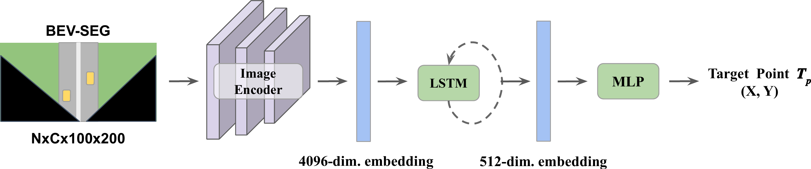
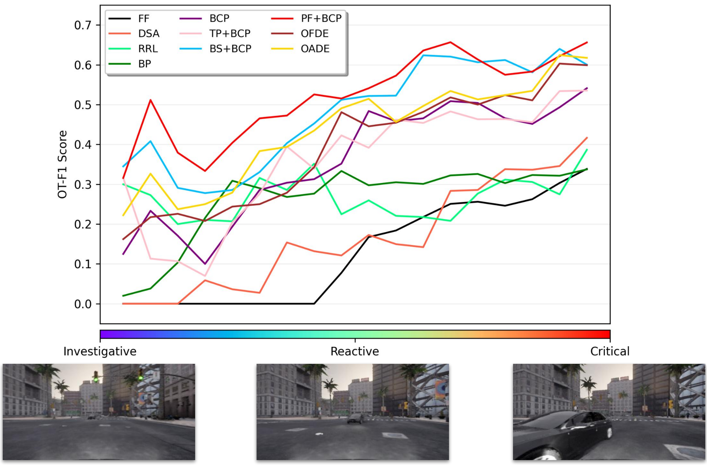

Abstract
We study behavior change-based visual risk object identification (Visual-ROI), a critical framework designed to detect potential hazards for intelligent driving systems. Existing methods often show significant limitations in spatial accuracy and temporal consistency, stemming from an incomplete understanding of scene affordance. For example, these methods frequently misidentify vehicles that do not impact the ego vehicle as risk objects. Furthermore, existing behavior change-based methods are inefficient because they implement causal inference in the perspective image space.
We propose a new framework with a Bird's Eye View (BEV) representation to overcome the above challenges. Specifically, we utilize potential fields as scene affordance, involving repulsive forces derived from road infrastructure and traffic participants, along with attractive forces sourced from target destinations. In this work, we compute potential fields by assigning different energy levels according to the semantic labels obtained from BEV semantic segmentation. We conduct thorough experiments and ablation studies, comparing the proposed method with various state-of-the-art algorithms on both synthetic and real-world datasets.
Methodology
Framework
Our proposed method (right) conducts causal inference in the bird's-eye view, enabling a parallel object removal process and using potential field as a new representation of scene affordance.
Target Point Predictor

Potential Field Rendering
Displacement Error from Two Observations (OFDE & OADE)
Behavior Change Prediction with Potential Field (PF+BCP)

Experimental Setting
Datasets
| Driver Behavior | Traffic Participants | |||||
|---|---|---|---|---|---|---|
| Go | Stop | Positive% | Non-Risk | Risk | Positive% | |
| RiskBench [9] | 75,633 | 44,877 | 37.2% | 158,369 | 17,434 | 9.9% |
| nuScenes [11] | 29,446 | 4,554 | 13.4% | 15,280 | 1,040 | 6.3% |
Visual-Based ROI Baselines
We evaluate seven baselines within our framework.
These baselines take a sequence of images as input and output a risk score for each road
user (e.g., vehicle or pedestrian).
A road user is considered a risk object if the raw score exceeds a predefined threshold.
It is important to note that all the following baselines rely on Visual-ROI methods.
Evaluation Metrics
We evaluate the performance of Visual-ROI models with two types of metrics: Spatial Accuracy and Temporal Consistency. Spatial Accuracy include the Optimal F1 Score (OT-F1) and the Optimal F1 Score in T Seconds (OT-F1-T), which measure the model's ability to accurately identify risks. Temporal Consistency metrics consist of the Progressive Increasing Cost (PIC) and the Weighted Multi-Object Tracking Accuracy (wMOTA), which assess the consistency and accuracy of the model over time.
Qualitative Results
ROI Demo on the RiskBench


Fine-grained Scenario-based Analysis

For further exploration, please visit our GitHub page.
OT-F1 for the Visual-ROI Methods Over Time

Figure 1: PIC Weight Trend
Figure 2: Performance Comparison of Visual-ROI
Quautitative Results
Table 1: Spatial Accuracy and Temporal Consistency on RiskBench
| Spatial Accuracy | Temporal Consistency | Inference Time | ||||
|---|---|---|---|---|---|---|
| OT-P (%)↑ | OT-R (%)↑ | OT-F1 (%)↑ | PIC (%)↓ | wMOTA (%)↑ | Avg (sec)↓ | |
| FF [5] | 22.2 | 27.9 | 24.7 | 39.3 | 55.0 | 0.027 |
| DSA [6] | 54.7 | 19.7 | 29.0 | 29.8 | 53.3 | 0.269 |
| RRL [7] | 49.4 | 15.4 | 23.5 | 28.9 | 52.3 | 0.280 |
| BP [8] | 24.2 | 35.1 | 28.7 | 39.0 | 57.5 | 0.119 |
| BCP [3] | 38.6 | 43.7 | 41.0 | 29.3 | 63.2 | 0.431 |
| TP+BCP | 47.4 | 51.7 | 49.5 | 28.0 | 67.2 | 0.437 |
| BS+BCP | 56.8 | 60.7 | 58.7 | 24.0 | 72.5 | 0.049 |
| OFDE | 50.8 | 56.7 | 53.6 | 26.7 | 65.4 | 0.062 |
| OADE | 52.7 | 57.9 | 55.2 | 25.7 | 66.9 | 0.061 |
| PF+BCP | 60.2 | 62.4 | 61.3 | 23.0 | 74.8 | 0.049 |
Using scene affordance (PF) as intermediate inputs enhances behavior change-based methods, leading to improved riskness and temporal consistency in Visual-ROI tasks. We also demonstrate that employing BEV representations for causal inference significantly enhances inference speed, achieving an 88% improvement compared to the use of perspective views.
Table 2: Ablation Studies
| Method | BEV-SEG | \( F_r \) | \( F_a \) | OT-F1 (%)↑ | PIC ↓ | wMOTA (%)↑ |
|---|---|---|---|---|---|---|
| FDE | ✓ | ✓ | 51.1 | 26.7 | 63.7 | |
| FDE | ✓ | ✓ | ✓ | 53.6 | 26.7 | 65.4 |
| ADE | ✓ | ✓ | 53.4 | 25.7 | 64.5 | |
| ADE | ✓ | ✓ | ✓ | 55.0 | 25.7 | 66.9 |
| 1 | 41.0 | 29.3 | 63.2 | |||
| 2 | ✓ | 49.5 | 28.0 | 67.2 | ||
| 3 | ✓ | ✓ | 58.7 | 24.0 | 72.5 | |
| 4 | ✓ | ✓ | 59.0 | 24.4 | 72.9 | |
| 5 | ✓ | ✓ | ✓ | 61.3 | 23.0 | 74.8 |
Table 3: OT-F1 in T secs
| Method | 1s (%)↑ | 2s (%)↑ | 3s (%)↑ | Overall (%)↑ |
|---|---|---|---|---|
| FF [5] | 28.7 | 24.4 | 21.5 | 24.7 |
| DSA [6] | 36.8 | 31.6 | 29.7 | 29.0 |
| RRL [7] | 35.0 | 32.2 | 31.9 | 23.5 |
| BP [8] | 33.8 | 32.8 | 30.8 | 28.7 |
| BCP [3] | 49.3 | 47.2 | 44.2 | 41.0 |
| TP+BCP | 52.8 | 49.8 | 46.9 | 49.5 |
| BS+BCP | 60.7 | 58.8 | 56.5 | 58.7 |
| OFDE | 56.4 | 53.0 | 50.3 | 53.6 |
| OADE | 57.9 | 55.0 | 52.7 | 55.2 |
| PF+BCP | 62.5 | 61.0 | 59.3 | 61.3 |
Real-Word Evaluation
nuScenes-ROI Dataset
We use the nuScenes dataset [11] as the testbed to evaluate the effectiveness of our method in the real world. We label risk objects manually according to the protocol described in [20]. In the testing phase, we use YOLOv8 [12] to generate object bounding boxes.

Table 4: nuScenes-ROI Evaluation
| OT-P (%)↑ | OT-R (%)↑ | OT-F1 (%)↑ | PIC (%)↓ | wMOTA (%)↑ | |
|---|---|---|---|---|---|
| BP [8] | 21.1 | 38.0 | 27.1 | 19.0 | 58.3 |
| BCP [3] | 50.8 | 50.6 | 50.7 | 15.2 | 69.0 |
| BS+BCP | 39.2 | 56.2 | 46.2 | 10.7 | 65.3 |
| PF+BCP | 45.5 | 73.2 | 56.1 | 8.9 | 76.2 |
ROI on the nuScenes Dataset

Citation
@article{pao2024PFBCP,
title = {{Potential Field as Scene Affordance for Behavior Change-Based Visual Risk Object Identification}},
author = {Pang-Yuan Pao, Shu-Wei Lu, Ze-Yan Lu and Yi-Ting Chen},
journal = {arXiv preprint arXiv:2312.XXXXX},
year = {2024}
}If you have any questions, please contact Pang-Yuan Pao.
[1] H. Wu, B. Xiao, N. Codella, M. Liu, X. Dai, L. Yuan, and L. Zhang, "CVT: Introducing Convolutions to Vision Transformers," in ICCV, 2021.
[2] O. Khatib, "Real-Time Obstacle Avoidance for Manipulators and Mobile Robots," in Proceedings. 1985 IEEE International Conference on Robotics and Automation, vol. 2, 1985, pp. 500-505.
[3] C. Li, S. H. Chan, and Y.-T. Chen, "Who Make Drivers Stop? Towards Driver-centric Risk Assessment: Risk Object Identification via Causal Inference," in IROS, 2020.
[4] P. Gupta, A. Biswas, H. Admoni, and D. Held, "Object Importance Estimation using Counterfactual Reasoning for Intelligent Driving," IEEE RA-L, 2024.
[5] Hu, A. Huang, J. Dolan, D. Held, and D. Ramanan, "Safe Local Motion Planning with Self-Supervised Freespace Forecasting," in CVPR, 2021.
[6] F.-H. Chan, Y.-T. Chen, Y. Xiang, and M. Sun, "Anticipating Accidents in Dashcam Videos," in ACCV, 2016.
[7] K.-H. Zeng, S.-H. Chou, F.-H. Chan, J. Carlos Niebles, and M. Sun, "Agent-centric Risk Assessment: Accident Anticipation and Risky Region Localization," in CVPR, 2017.
[8] C. Li, Y. Meng, S. H. Chan, and Y.-T. Chen, "Learning 3D-Aware Egocentric Spatial-Temporal Interaction via Graph Convolutional Networks," in ICRA, 2020.
[9] C.-H. Kung, C.-C. Yang, P.-Y. Pao, S.-W. Lu, P.-L. Chen, H.-C. Lu, and Y.-T. Chen, "RiskBench: A Scenario-based Benchmark for Risk Identification," in ICRA, 2024.
[10] A. Milan, L. Leal-Taixe, I. Reid, S. Roth, and K. Schindler, "MOT16: A Benchmark for Multi-Object Tracking," arXiv, 2016.
[11] H. Caesar, V. Bankiti, A. H. Lang, S. Vora, V. E. Liong, Q. Xu, A. Krishnan, Y. Pan, G. Baldan, and O.Beijbom, "nuScenes: A Multimodal Dataset for Autonomous Driving," in CVPR, 2020.
[12] G. Jocher, A. Chaurasia, and J. Qiu, "Ultralytics YOLO," 2023. Available: https://github.com/ultralytics/ultralytics
[13] N. Hanselmann, K. Renz, K. Chitta, A. Bhattacharyya, and A. Geiger, "KING: Generating Safety-Critical Driving Scenarios for Robust Imitation via Kinematics Gradients," in ECCV, 2022.